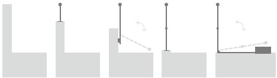
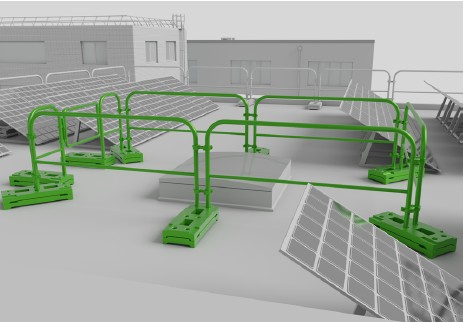
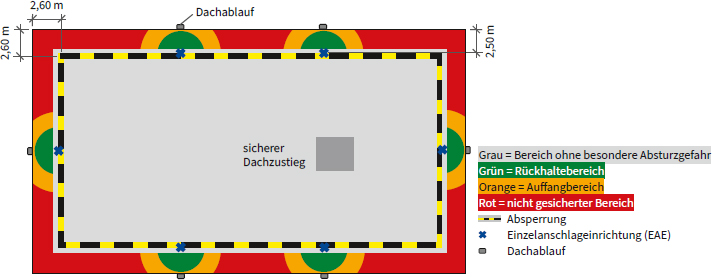
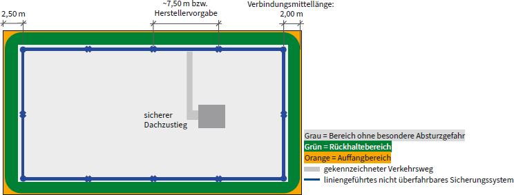
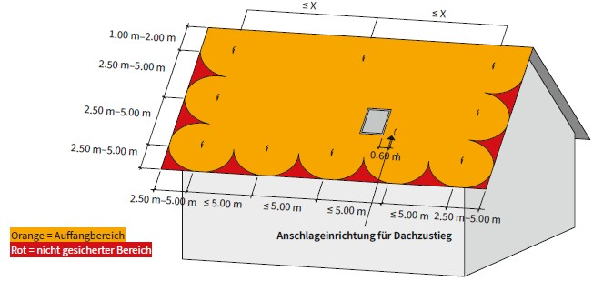
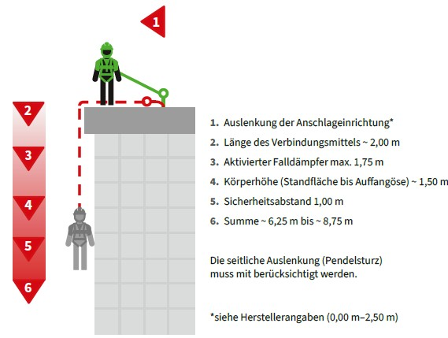
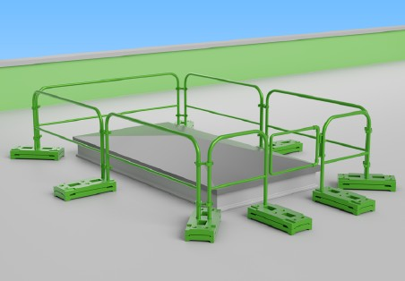
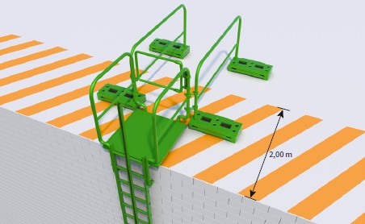
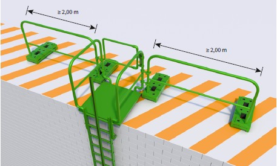
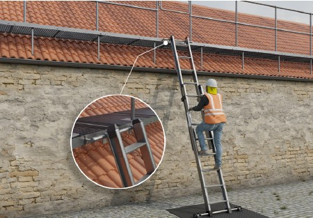

Schutzmaßnahmen sind nach dem Rangfolgenprinzip nach dem Arbeitsschutzgesetz festzulegen – auch bei der Planung von Neu- oder Umbauten, siehe Baustellenverordnung (siehe Abschnitt 5.8). Kollektiv-technische Schutzmaßnahmen sind den individuellen Schutzmaßnahmen und Schutzsystemen vorzuziehen. Individuelle Schutzmaßnahmen können nur geplant werden, wenn kollektiv-technische Schutzmaßahmen aus konstruktiver Sicht nicht realisiert werden können. Permanente Systeme sind gegenüber temporären Absturzschutzsystemen bevorzugt zu planen.
Maßnahmen gegen Absturz sind grundsätzlich für Instandhaltungsarbeiten insbesondere bei Absturzhöhen von mehr als 1,00 m zu ergreifen.
Der Gefahrenbereich Absturz erstreckt sich 2,00 m um jede mögliche Absturzkante. Innerhalb dieses Gefahrenbereichs darf sich ausschließlich aufgehalten und gearbeitet werden, wenn Maßnahmen gegen Absturz getroffen sind. Der Gefahrenbereich Absturz ist zu kennzeichnen, abzusperren und gegen unbefugtes Betreten zu sichern (siehe ASR A2.1, Punkt 5.4).
Absturzschutzsysteme und die technische Gebäudeausstattung sind aufeinander abzustimmen. Zum Betrieb von gebäudetechnischen Anlagen müssen die Anforderungen des Arbeitsschutzes erfüllt sein. Den Schutzmaßnahmen sollte stets Vorrang eingeräumt werden.
Bei der Planung ist sowohl der Absturz nach innen (z. B. Lichtbänder, Lichtkuppeln), als auch der Absturz nach außen (z. B. Dachkanten) zu beachten.
Bei der Auswahl der Absturzschutzsysteme sind insbesondere folgende Punkte zu bewerten:
Das Ergebnis des Bewertungsprozesses wird in einer oder der Kombination aus mehreren Ausstattungsklassen (AK) beschrieben. Die Bewertungstabelle und die Definition der Ausstattungsklassen sind unter Abschnitt 6.2 und 6.6 beschrieben.
Bereiche der Dachfläche, in denen der Bewertungsprozess stark voneinander abweicht, können individuell betrachtet werden (Zonierung). Die entstehenden Zonen sind eindeutig zu kennzeichnen und voneinander abzugrenzen.
Verkehrswege und Arbeitsplätze sind auch in Bezug auf eine mögliche Rutschgefahr zu bewerten, da eine Absturzsicherung hier allein nicht ausreichend sein kann. Die Dachneigung und die Oberflächenbeschaffenheit des Daches sind dabei zu bewerten. Besteht die Gefahr des Rutschens, sind entsprechende Maßnahmen zu ergreifen (z. B. Laufstege, Dachleitern). Weiterhin sind Witterungseinflüsse zu berücksichtigen (z. B. Raureif, Regen, Eis, Wind).
Zugangspunkte zur Dachfläche müssen so gewählt werden, dass beim Um- oder Übersteigen auf die Dachfläche keine weiteren Gefährdungen auftreten. Nachfolgende Aspekte im Umfeld des Um- oder Überstiegs sind dabei zu beachten:
Bei der Planung von Absturzsicherungen auf Dachflächen im Bestand sind Zuwegungen und Bewegungsräume zur Instandhaltung von bestehenden Anlagen zu berücksichtigen, z. B. Wartung von RWA, Blitzschutzanlagen, Photovoltaikanlagen oder Schornsteinreinigung.
Grundsätze für die Planung Für die Planung stellen sich sowohl bei Neubauten als auch bei Umbauten oder bei der Ausstattung mit neuen Anlagen auf dem Dach die folgenden Fragen:
Sofern möglich, sind Umwehrungen, also permanent mit dem Gebäude verbundene Geländer zu planen. Diese weisen in der Regel den geringsten Wartungsaufwand auf, halten damit u. a. die Betriebskosten während der Nutzungsdauer gering und erfordern auch keine spezielle Qualifikation bei der Benutzung (im Gegensatz zur Benutzung von PSA gegen Absturz und Anschlageinrichtungen). Umwehrungen sind auch klappbar verfügbar, sodass die Bauwerksansicht oder eine Höhenbeschränkung nicht beeinträchtigt wird. Da Durchstürze einen Unfallschwerpunkt bei tödlichen Arbeitsunfällen darstellen, sollte dringend darauf geachtet werden, dass Dachoberlichter (Lichtkuppeln, Lichtbänder oder -platten) sowie Belichtungselemente und andere Bauteile oder Flächen permanent und dauerhaft gegen Durchsturz ausgeführt sind oder permanent und dauerhaft gegen Durchsturz gesichert werden (Verglasungen, Verstrebungen, Gitter, Netze oder Umwehrungen). |
Hinweis: Glasflächen (betretbar, begehbar, durchsturzsicher) sind entsprechend der Normenreihe DIN 18008 Teil 1–6 geprüft. Andere Materialien können nach dem Prüfgrundsatz GS-BAU-18 geprüft werden. Es ist zu beachten, dass die Absturzsicherung auch an vertikalen Flächen, z. B. Stirnseiten von Oberlichtern, sichergestellt ist.
Tabelle 1 Matrix zur Ermittlung der Mindestausstattung von Dächern
| Mindestausstattung zur Auswahl von Absturzschutzsystemen auf Dächern | |||
Personengruppe |
Nutzungskategorie Nutzungs-/Wartungsintensität |
||
| HOCH | MITTEL | GERING | |
| I | Ausstattungsklasse A | Ausstattungsklasse B | Ausstattungsklasse C |
| II | Ausstattungsklasse A | Ausstattungsklasse A | Ausstattungsklasse A |
| III | Baurecht | Baurecht | Baurecht |
Hinweis zu Tabelle 1: Weiterführende Erläuterungen zu den verwendeten Klassifizierungen siehe 6.3 bis 6.6.
Personen, die im Umgang mit PSA gegen Absturz gemäß DGUV Vorschrift 1 §§ 4 & 31 unterwiesen bzw. qualifiziert sind, können Folgendes nachweisen:
Personen, die nicht im Umgang mit PSA gegen Absturz unterwiesen wurden.
Privater und öffentlicher Personenverkehr
Die Häufigkeit der planbaren Begehung richtet sich nach Art und Material des Dachaufbaus, nach der Anzahl von technischen Anlagen und deren Wartungshäufigkeit.
Zur Ermittlung der Wartungsintensität können die Empfehlungen aus Richtlinien und Normen entnommen werden. Die Angaben in Tabelle 2 mit Verweis auf Normen und Richtlinien dienen der Orientierung.
Tabelle 2 Empfehlung von Wartungshäufigkeiten
| Wartungstätigkeit | Quelle: Norm/Richtlinie | Wartungshäufigkeit |
| Entwässerung | DIN 1986-100 Teil 3 | min. halbjährlich |
| Abdichtung | DIN 18531 Teil 4 | min. jährlich |
| Blitzschutz | DIN EN 62305-3 Beiblatt 3 | min. alle 2 Jahre |
| RWA | DIN 18 232 Teil 2 | jährlich |
| Photovoltaikanlagen | DIN EN 62446-1 | jährlich |
| Solarthermie | DIN EN 12975 DIN EN 12976 |
jährlich |
| Wärmepumpe | DIN EN 378 | min. jährlich |
| Kehr- oder überprüfungspflichtige Anlagen, z. B. Abluftanlagen, Feuerstätten usw. (inkl. Schornsteinkehrarbeiten) |
Kehr- und Überprüfungsordnung (KÜO) | min. jährlich, je nach Anlage auch mehrfach im Jahr |
| Gründach extensiv | DIN 18919, FLL-Dachbegrünungsrichtlinien |
1–3 Pflegegänge pro Jahr 1–2 Kontrollgänge |
| Gründach intensiv | DIN 18919, FLL-Dachbegrünungsrichtlinien |
3–8 Pflegegänge pro Jahr 1–2 Kontrollgänge |
| Anschlageinrichtungen bis 2015 | DGUV Regel 112-198 | min. jährlich |
| Anschlageinrichtungen ab 2016 | Herstellervorgaben | min. jährlich |
| Geländer/Seitenschutz | Herstellervorgaben | min. alle 2 Jahre |
Hinweis: Die Auflistung ist nicht vollständig. Versicherungen verlangen im Rahmen des Vertragswerks die Intervalle der wartungspflichtigen Infrastruktur einzuhalten, um mögliche Schäden zu minimieren bzw. zu verhindern.
In den folgenden Beschreibungen der Ausstattungsklassen (AK) sollen die jeweils entsprechenden Absturzsicherungssysteme und weitere Randbedingungen für das sichere Arbeiten definiert werden.
Hinweise zur grafischen Darstellung in den Prinzipskizzen:
Grauer Bereich: Bereich ohne besondere Absturzgefahr
Grüner Bereich: Rückhaltebereich
Darstellung = der Radius des grünen Bereichs ist der kürzeste Abstand zur nächstgelegenen Absturzkante und zeigt den erreichbaren Bereich an.
Begehbar mit geeigneter PSA gegen Absturz in einem Rückhaltesystem. Die PSA gegen Absturz darf nicht länger sein als der kürzeste Abstand zur nächstgelegenen Absturzkante abzüglich 1,50 m.
Dieser Bereich sollte planerisch einen möglichst großen Teil des absturzgefährdeten Bereichs bedecken. Dafür sind die Anzahl, die Positionierung und die Art der Anschlageinrichtung essenziell. Überfahrbare Seil- und Schienensicherungssysteme sind den Einzelanschlageinrichtungen immer vorzuziehen. Ein Rettungskonzept für die Arbeiten auf der Dachfläche ist erforderlich.
Oranger Bereich: Auffangbereich
Darstellung = "grüner Bereich" + max. Auslenkung der AE + 2,00 m.
Begehbar mit geeigneter PSA gegen Absturz in einem Auffangsystem. Ein Sturz in das Auffangsystem ist möglich! Pendelsturz möglich! Ein Rettungskonzept für das Retten der aufgefangenen Person ist notwendig!
Gebrauchsanweisung der PSA gegen Absturz beachten. Insbesondere in Bezug auf den Bandfalldämpfer und die Eignung der PSA gegen Absturz zur Belastung über die Kante.
Orange Bereiche sind planerisch auf ein Minimum zu reduzieren. Regelmäßige Arbeiten dürfen in diesem Bereich nicht durchgeführt werden.
Roter Bereich: nicht gesicherter Bereich
Nicht sicher begehbar. Diese Bereiche sind nicht von dem vorliegenden Sicherungssystem erfasst. Sollten Arbeiten in diesen Bereichen notwendig sein, müssen zusätzliche geeignete Maßnahmen getroffen werden.
| Umwehrung | |
| Absperrrung | |
| liniengeführtes Sicherungssystem, überfahrbar oder nicht überfahrbar | |
| Eckstütze des liniengeführten Sicherungssystems | |
| Einzelanschlageinrichtung (EAE) |

Abb. 7 Prinzipskizze für die Ausstattungsklasse A mit Umwehrung, Zugang zum Dach mit sicherem Dachzustieg
| - | durch das Gebäude und einem permanent eingerichteten Dachzustieg |
| - | über eine innen oder außen liegende Treppe |
| - | über fest installierte Steigleitern mit vorzugsweise Steigschutz oder Rückenschutz |
| - | sofern eine Prüfung ergeben hat, dass keine sicherere Zugangsvariante möglich ist als eine Leiter: bis max. 5,00 m Aufstiegshöhe mit Anlegeleiter mit gesichertem Überstieg (z. B. dauerhafte Leiterkopfsicherung, selbstschließende Durchgangssperre), es gelten beschränkende Bedingungen (siehe 6.9.3). |

Abb. 8 Schematische Darstellungen von dauerhaften Umwehrungen

Abb. 9 Beispiel einer gesicherten Dachfläche mit einem auflastgehaltenen Geländer an der Dachkante und um ein nicht durchsturzsicheres Oberlicht

Abb. 10 Prinzipskizze für Ausstattungsklasse B auf einem Flachdach mit überfahrbarem Seil- oder Schienensicherungssystem und Zugang zum Dach mit sicherem Dachzustieg und gekennzeichneter Verkehrsweg

Abb. 11 Prinzipskizze für Ausstattungsklasse B auf einem Steildach als Satteldach mit liniengeführtem überfahrbarem Sicherungssystem im First und Sicherheitsdachhaken am Ortgang
| - | durch das Gebäude mit einem permanent eingerichteten Dachzustieg, |
| - | über eine innen oder außen liegende Treppe, |
| - | über fest installierte Steigleitern mit vorzugsweise Steigschutz oder Rückenschutz, |
| - | sofern eine Prüfung ergeben hat, dass keine sicherere Zugangsvariante möglich ist als eine Leiter: bis max. 5,00 m Aufstiegshöhe mit Anlegeleiter mit gesichertem Überstieg (z. B. dauerhafte Leiterkopfsicherung, selbstschließende Durchgangssperre), es gelten beschränkende Bedingungen (siehe 6.9.3). |
| - | Am Zugang zur Dachfläche mit einem Dachausteig oder Anlegeleiter ist in erreichbarer Nähe (maximal 60 cm entfernt) eine geeignete Anschlageinrichtung oder Sicherheitsdachhaken zu setzen. |

Abb. 12 Beispiel für Ausstattungsklasse C auf einem Flachdach mit Absperrung und Einzelanschlageinrichtungen mit Rückhaltesystem (Verbindungsmittel max. 2,00 m) an z. B. wartungsbedürftigen Entwässerungspunkten, Zugang über sicheren Dachzustieg

Abb. 13 Prinzipskizze für Ausstattungsklasse C auf einem Flachdach mit nicht überfahrbarem Seilsystem mit Rückhaltesystem (Verbindungsmittel max. 2,00 m) und Zugang mit sicherem Dachzustieg und gekennzeichnetem Verkehrsweg

Abb. 14 Prinzipskizze für Ausstattungsklasse C auf einem Steildach als Satteldach mit Sicherheitsdachhaken mit Rückhaltesystem am Ortgang (Annahme: ausreichende Sicherheit gegen Ausrutschen besteht)
| - | durch das Gebäude mit einem permanent eingerichteten Dachzustieg |
| - | über eine innen oder außen liegende Treppe |
| - | über fest installierte Steigleitern mit vorzugsweise Steigschutz oder Rückenschutz |
| - | sofern eine Prüfung ergeben hat, dass keine sicherere Zugangsvariante möglich ist als eine Leiter: bis max. 5,00 m Aufstiegshöhe mit Anlegeleiter mit gesichertem Überstieg (z. B. dauerhafte Leiterkopfsicherung, selbstschließende Durchgangssperre), es gelten beschränkende Bedingungen (siehe 6.9.3). |
Verkehrswege und Arbeitsplätze entsprechen den Vorgaben des Baurechts bzw. bei gewerblichen Gebäuden auch den weiterführenden Anforderungen des Arbeitsstättenrechts.
Umwehrungen können als Brüstung oder feste Geländer, fester Seitenschutz oder Gitter ausgeführt werden. Umwehrungen in Bereichen und Verkehrswegen, die nur zu Wartungs- und Instandhaltungsarbeiten begangen werden, müssen so geplant und ausgeführt werden, dass sie an der Oberkante eine Horizontallast von 500 N/m aufnehmen können. In begründeten Fällen, z. B. aus statischen und baukonstruktiven Gegebenheiten, ist eine aufnehmbare Horizontallast auf 300 N/m ausreichend. Werden hierbei temporäre Seitenschutzsysteme verwendet, müssen die Lasteinträge aus Wind, Anprall und betriebstechnischen Gegebenheiten mitberücksichtigt werden.
Wenn temporäre Seitenschutzsysteme nach DIN EN 13374 dauerhaft am Gebäude verbleiben sollen, dann sind zusätzliche Anforderungen nach ASR A2.1 im Einzelfall nachgewiesen werden. Es sollte sichergestellt sein, dass die vom Hersteller als temporäre konstruierten Seitenschutzsysteme auch dauerhaft am Gebäude verbleiben können. Zusätzliche erforderliche Anforderungen dafür sind bei der herstellenden Firma der Systeme anzufragen bzw. mit dieser abzuklären.
Grundsätzlich werden Seitenschutzsysteme in zwei Gruppen unterteilt:
Bei der Planung von Umwehrungen ist die jeweilige Gebäudehöhe zu beachten. Gemäß den Anforderungen der ASR A2.1 ist bis 12,00 m Gebäudehöhe die Höhe der Umwehrung 1,00 m. Bei Gebäudehöhen über 12,00 m muss die Höhe der Umwehrung, die dauerhaft auf der Dachfläche verbleibt, mindestens 1,10 m betragen. Die Höhe wird jeweils vom Standplatz gemessen.
Bei einer vorhandenen Attika- bzw. Aufkantungshöhe von ≥ 0,15 m kann von einer Fußleiste abgesehen werden.
Die Dachneigung ist bei der Planung der Umwehrung zu berücksichtigen. Bei steigender Dachneigung sind neben den statischen Lasten aus dem Anlehnen einer benutzenden Person auch dynamische Lasten durch das Anprallen einer benutzenden Person zu berücksichtigen.
Temporäre Seitenschutzsysteme nach EN 13374 Klasse A sind geeignet für Dachneigungen bis 10°. Über die Dachneigung von 10° hinaus sind Systeme nach EN 13374 Klasse B und C geeignet.
Insbesondere bei auflastgehaltenen Seitenschutzsystemen ist die Lagesicherheit infolge der Dachneigung, von Windlasten und von Schneeschub zu prüfen. Dies ergibt sich im Regelfall durch die jeweiligen Herstellerangaben und ist durch die von der Bauherrschaft beauftragten tragwerksplanenden Person zu prüfen.
Bei der Anordnung der Seitenschutzsysteme sind z. B. Dachaufbauten, die im Seitenschutzverlauf stehen, im jeweiligen Projekt zu beachten und in die Anordnung mit einzuplanen.
Sonstige technische Einrichtungen, wie z. B. Blitzschutzeinrichtungen, Rauch- und Wärmeabzugsanlagen (RWA), Photovoltaik-Anlagen, sind bei der Planung von Seitenschutzsystemen zu berücksichtigen und vom zuständigen bauseitigen Fachplaner zu bewerten und entsprechende Maßnahmen zu treffen.
Absperrungen sind organisatorische Maßnahmen und nachrangig zu Umwehrungen zu planen. Absperrungen können als Geländer, Ketten oder Seile ausgeführt werden. Sie sind mit einem Abstand von min. 2,00 m zur Absturzkante zu positionieren. Die Höhe der Absperrung muss min. 1,00 m betragen und sie muss gut sichtbar mit dem Verbotszeichen D-P006 "Zutritt für Unbefugte verboten" gekennzeichnet sein.
Die Absperrung muss so ausgeführt sein, dass der Schutz witterungsunabhängig gegeben ist. Besonders ist hierbei auf den Einfluss von Wind und die Standfestigkeit zu achten. Die Farbgebung der Absperrung sollte kontrastreich zum Untergrund bzw. Hintergrund sein. Eine spezielle Farbgebung ist nicht vorgeschrieben.
Bei Verkehrswegen kann die Abgrenzung zum Gefahrenbereich auch optisch deutlich erkennbar sein, vgl. ASR A2.1.
Permanente Anschlageinrichtungen (pAE) sollten mit einem Abstand von 2,50 m zur Absturzkante positioniert werden. Bei baulichen Zwängen kann in begründeten Fällen von diesem Maß abgewichen werden. Die Belegung der Dachfläche mit Photovoltaikmodulen ist kein baulicher Zwang. Vorteile dieser Positionierung sind:
Rückhaltesysteme sind den Auffangsystemen vorzuziehen, da diese den Absturzunfall verhindern und Benutzende, bei korrekter Verwendung, stets auf der Dachfläche gehalten werden. Damit ist das Verletzungsrisiko deutlich minimiert. Bei einer Verringerung des Abstands zur Absturzkante ist ein Rückhalten nur dann gewährleistet, wenn ein mitlaufendes Auffanggerät mit beweglicher Führung nach DIN EN 353-2 entsprechend kurz gewählt bzw. eingestellt ist und der Abstand der Anschlageinrichtung zur Absturzkante nicht < 1,50 m ist. Bei Seilsicherungssystemen ist insbesondere die Auslenkung des Seiles zu beachten. Für die Berechnung der Seilauslenkung sind 0,5 kN in der Feldmitte anzusetzen. Um die Anwendung als Rückhaltesystem zu garantieren, sollte die Auslenkung nicht mehr als 0,50 m betragen. Wenn eine Rückhaltewirkung nicht gewährleistet werden kann, sind die Anforderungen an ein Auffangsystem zwingend zu erfüllen.
Auffangsysteme können nur geplant werden, wenn ausreichend freier Sturzraum zur Verfügung steht. Der mindestens erforderliche Sturzraum kann am Gebäude in Teilbereichen oder vollständig zum Beispiel durch Staffelgeschosse, Balkone, an der Fassade befestigte technische Gebäudeausstattung oder andere Anbauteile, sowie aufsteigende Installationen am Gebäudegrund nicht in ausreichendem Maß vorhanden sein. Zuzüglich zu den Vorgaben aus der Anwendung von PSA gegen Absturz sind die Verformungen aus der Anschlageinrichtung selbst mitzubeachten. Diese Informationen sind den Angaben der herstellenden Firma der jeweiligen Produkte zu entnehmen. In Abbildung 15 ist eine beispielhafte Rechnung des notwendigen freien Sturzraumes für die Benutzung von Auffangsystemen mit PSA gegen Absturz dargestellt.

Abb. 15 Beispielberechnung des notwendigen freien Sturzraums bei der Benutzung von PSA gegen Absturz (Auffangsystem) auf einem Flachdach
Sollte die Positionierung von Anschlageinrichtungen im Gefahrenbereich Absturz notwendig sein, ist zwingend zu gewährleisten, dass die entsprechende Anschlageinrichtung gesichert erreicht werden kann. Dies kann zum Beispiel durch ein Seilsicherungssystem gewährleistet werden, oder durch einen entsprechend verringerten Abstand (≤ 2,50 m) von Einzelanschlageinrichtungen.
Eine Positionierung von Anschlageinrichtungen kann an geeigneten Strukturen über Kopf, an der Fassade oder in Bodennähe erfolgen. Dabei sind höher positionierte Anschlageinrichtungen zu bevorzugen, da die Krafteinwirkung auf den Körper, im Falle eines Sturzes, geringer ist.
Bei Satteldächern sind Sicherheitsdachhaken mit einem Abstand von 1,00 m zum First einzubauen. Bei Pultdächern ist der Abstand der Sicherheitsdachhaken zum First auf ≥ 2,50 m zu vergrößern.
Bei ausreichender Sicherheit gegen Abrutschen sollte der Abstand der Sicherheitsdachhaken zum Ortgang ≥ 2,50 m betragen. Der horizontale Abstand zwischen den Sicherheitsdachhaken sollte ≤ 5,00 m und der vertikale Abstand ≤ 5,00 m betragen.
Bei nicht ausreichender Sicherheit gegen Abrutschen sind Sicherheitsdachhaken mit einem Abstand zum First von max. 1,00 m einzubauen. Der Abstand der Sicherheitsdachhaken zum Ortgang soll ≥ 1,50 m betragen. Der horizontale Abstand zwischen den Sicherheitsdachhaken sollte ≤ 3,50 m und der vertikale Abstand ≤ 5,00 m betragen.
Bei Dachneigungen zwischen 40° und 60° oder nicht ausreichender Sicherheit gegen Abrutschen, müssen zusätzlich Dachauflegeleitern verwendet werden. Bei Dachneigungen über 60° müssen besondere Arbeitsplätze geschaffen werden, z. B. mit Gerüsten oder es müssen andere Arbeitsverfahren zur Anwendung kommen, z. B. Hubarbeitsbühnen, Seilzugangstechnik (SZP).
Als Sicherheitsdachhaken sollten nur Produkte Kit B nach DIN EN 17235 eingesetzt werden. Bei Produkten nach DIN EN 517 sollten während der Übergangszeit nur Typ B eingesetzt werden, da sie als Anschlageinrichtung in alle Richtungen (360°) und zum Einhängen von Dachauflegeleitern zugelassen sind.
Hinweis: Produkte der DIN EN 517 Typ A sind nur in Richtung der Falllinie des Daches zugelassen.
Temporäre Maßnahmen umfassen das Montieren, Vorhalten und Nutzen von Sicherheitseinrichtungen, die lediglich für einen Arbeitseinsatz hergestellt oder errichtet und nach diesem wieder abgebaut werden.
Temporäre Einrichtungen können sowohl kollektive Einrichtungen wie Gerüste, als auch Hubarbeitsbühnen, Absperrungen etc. als auch für den Einzelfall montierte temporäre Anschlageinrichtung für die Benutzung von PSA gegen Absturz sein.
Die temporären Anschlageinrichtungen fallen unter die Definition der PSA und sind entsprechend zu prüfen (EU-Baumusterprüfung) und zu kennzeichnen. Die Anforderungen an temporäre Anschlageinrichtungen sind u. a. in der DIN EN 795 geregelt. Bei Benutzung durch mehrere Personen sind zusätzlich die Anforderungen gemäß DIN CEN/TS 16415 zu beachten. Darüber hinaus können auch ausreichend tragfähige Bestandteile von baulichen Einrichtungen als temporär genutzte Anschlagmöglichkeit verwendet werden. Die Anforderungen an temporäre Anschlagmöglichkeiten, für eine Person, basieren generell auf der Einwirkung durch den Lastfall "Auffangen" (6 kN, zzgl. Teilsicherheitsbeiwert von 1,5 = 9 kN) und berücksichtigen die Verwendung in bzw. mit allen persönlichen Absturzschutzsystemen Auffang-, Arbeitsplatzpositionierungs- und Rückhaltesystemen.
Der Zugang zur Dachfläche muss zusammen mit der Dachfläche bzw. den Tätigkeiten auf der Dachfläche bewertet werden. Für die Bewertung der Zuwegung der Dachfläche müssen die folgenden Kriterien berücksichtigt werden:
Bei der Planung von permanenten Zugängen werden innenliegende Zugänge und Ausstiege, Außentreppen oder Zuwegungen mit Seitenschutz empfohlen (siehe ASR A1.8).
Für gelegentliche Zugänge zur Dachfläche können permanente Aufstiege wie Steigleitern mit Steigschutz bzw. Rückenschutz vorgesehen werden.
Tragbare Leitern sollten nicht als Zugang geplant werden, da bei der Verwendung von Leitern eine vergleichsweise hohe Unfallgefahr besteht. Sollte jedoch keine andere sicherere Zugangsvariante möglich sein, kann nach Prüfung der Alternativen und deren begründetem Ausschluss eine Leiter unter beschränkenden Bedingungen als Zugang vorgesehen werden, siehe 6.9.2 und TRBS 2121-2.
Wird die Dachfläche im Rahmen der Wartungs- und Instandhaltungsarbeiten häufig begangen, ist der Zugang mit Treppe eine optimale Lösung.
Eine spätere Veränderung oder Erweiterung der Nutzung der Dachfläche ist so einfacher realisierbar. Außerdem ist die Mitnahme von Werkzeug und Material einfacher zu gestalten und wesentlich sicherer.
Für geringere Begehungsfrequenzen einer eingeschränkten Personengruppe können auch Hilfstreppen mit Dachzustiegen oder -durchstiegen eingesetzt werden.
Die Anforderungen an die Ausgestaltung der Treppen bzw. Hilfstreppen werden in der ASR A1.8 beschrieben.
Tabelle 3 Treppenauftritte und -steigungen nach Anwendungsbereich
| Anwendungsbereich/Bauten | cm |
cm |
| Versammlungsstätten, Verwaltungsgebäude der öffentlichen Verwaltung, Schulen, Horte, Kindertageseinrichtungen | ||
| gewerbliche Bauten, sonstige Gebäude | ||
| Hilfstreppen |
Der Zugang auf die Dachfläche sollte direkt aus einem Treppenraum oder als Durchstieg mit einer geeigneten Dachdurchsteigöffnung geplant werden.
Bodentreppen (auch Dachbodentreppen, Speichertreppen) sind nach DIN EN 14975:2010-12 und bei höheren Deckenstärken ggf. auch nach DIN 3193:2018-03 auszugestalten. Es ist auf eine Umwehrung um die Austrittstelle und den geeigneten Typ zu achten. Ein Handlauf wird empfohlen. Bei planmäßig regelmäßigen Benutzungen ist eine wiederkehrende Wartung der Bodentreppe sinnvoll.
Es ist darauf zu achten, dass bestehende oder geplante Umwehrungen in unmittelbarer Nähe der ausgeklappten Bodentreppe ihre Wirksamkeit als Absturzsicherung nicht verlieren, z. B. bei obersten Treppenpodesten. Gegebenenfalls sind Umwehrungen in diesen Bereichen derart zu erhöhen, dass die Absturzsicherung wirksam bleibt bei der Verwendung der Bodentreppe.
Bei der Auswahl von Dachdurchsteigöffnungen im Flach- oder Steildach ist z. B. auf folgende Anforderungen zu achten:

Abb. 16 Dachdurchsteigöffnung im Flachdach mit gesichertem Randbereich (auflastbasiertes Seitenschutzsystem) und selbstschließender Tür
Steigleitern sind wegen der höheren Absturzgefahr und der höheren körperlichen Anstrengung nur zulässig, wenn der Einbau einer Treppe betriebstechnisch nicht möglich ist.
Wenn der Zugang nur gelegentlich (z. B. zu Wartungsarbeiten) von einer geringen Anzahl unterwiesener Beschäftigter genutzt wird, kann eine Steigleiter als Zutritt zur Dachfläche gewählt werden. Dabei ist die Rettung sicherzustellen.
Der Transport von Werkzeugen oder anderen Gegenständen darf die sichere Nutzung von Steigleitern einschließlich PSA gegen Absturz nicht beeinträchtigen. Steigleitern mit mehr als 5,00 m Fallhöhe müssen mit Einrichtungen zum Schutz gegen Absturz ausgestattet sein, siehe ASR A1.8. Nach DIN EN 18799 ist eine Absturzsicherung ab mehr als 3,00 m erforderlich, d. h. neu zu installierende Steigleitern sollten so ausgebildet sein. Die Auswahl der Absturzsicherung (Rückenschutz oder Steigschutzeinrichtungen) ist in Abhängigkeit von der Schutzfunktion und ihrer Wirksamkeit zu treffen. Steigleitern mit Steigschutzeinrichtungen werden empfohlen. Die Kombination von Rückenschutz und Steigschutzeinrichtungen ist nicht zulässig. Die Steigleitern müssen im Zugangsbereich gegen unbefugtes Betreten gesichert werden.
Für die Montage des Steigleitersystems an Bauwerken dürfen nur nachweislich geeignete und zugelassene Befestigungssysteme oder für den Einzelfall nachgewiesene Befestigungssysteme verwendet werden.
Die fachgerechte Montage darf nur von qualifiziertem und befähigtem Personal entsprechend der Montageanleitung der herstellenden Firma ausgeführt werden. Zur fachgerechten Montage gehört auch die Funktionsprüfung der Steigschutzeinrichtung.
Die Montage des Steigleitersystems ist von der aufsichtführenden Person (z. B. anhand der Montageleitung) der montierenden Firma vollständig zu dokumentieren und die Dokumentation der Betreiberin oder dem Betreiber zu übergeben (z. B. für die Unterlage für spätere Arbeiten nach Baustellenverordnung).
Steigleitern an baulichen Anlagen müssen der DIN 18799 sowie der ASR A1.8 entsprechen.
Steigschutzeinrichtungen sind mindestens alle 12 Monate durch eine sachkundige Person zu prüfen.
| Weitere Informationen zur Auswahl und Benutzung von Steigleitern können der DGUV Information 208-032 "Auswahl und Benutzung von Steigleitern" entnommen werden. |

Abb. 17 Zugang zur Dachfläche mit Steigleiter mit Steigschutz sowie Zugangsbeschränkung und selbstschließender Durchgangssperre

Abb. 18 Zugang zur Dachfläche mit Steigleiter und Steigschutz. Seitenschutz 2 m links und rechts vom Holm gemessen
Zunächst ist zu prüfen, ob für den Zugang zur Dachfläche ein sichereres Arbeitsmittel als eine tragbare Leiter geplant bzw. verwendet werden kann. Erst wenn andere Zugangsmöglichkeiten begründet ausgeschlossen werden, darf eine Leiter als Zugang zur Dachfläche eingesetzt werden (3.1.4 Anhang 1 BetrSichV und Abschnitt 3 TRBS 2121 Teil 2). Folgende beschränkende Bedingungen gelten bei der Verwendung von Leitern:

Abb. 19 Leiter mit fester Einhängevorrichtung an einem ertüchtigten Bestandsgebäude mit gesichertem Überstieg
Bei der Planung in Bestandsgebäuden, bei denen ein Zugang zum Dach nicht mit Aufzügen, Treppen und Steigleitern herstellbar ist, kann eine vor Ort für diesen Zweck vorgehaltene tragbare Leiter mit vorgesehenen Einrichtungen zum sicheren Übersteigen auf das Dach eingerichtet werden, wenn die Bedingungen für die Verwendung einer Leiter eingehalten werden können.